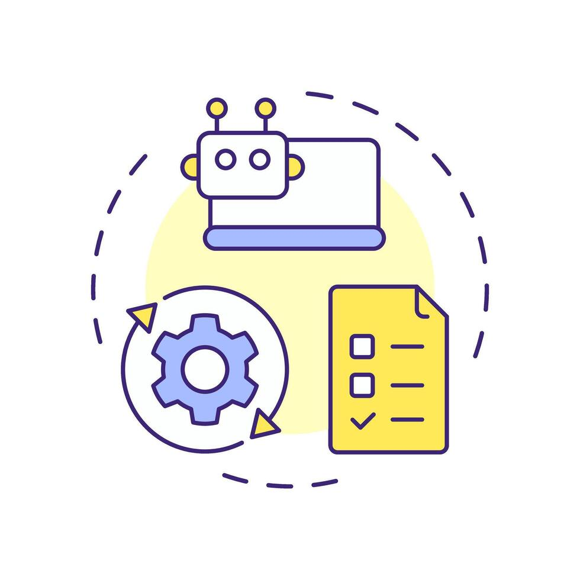
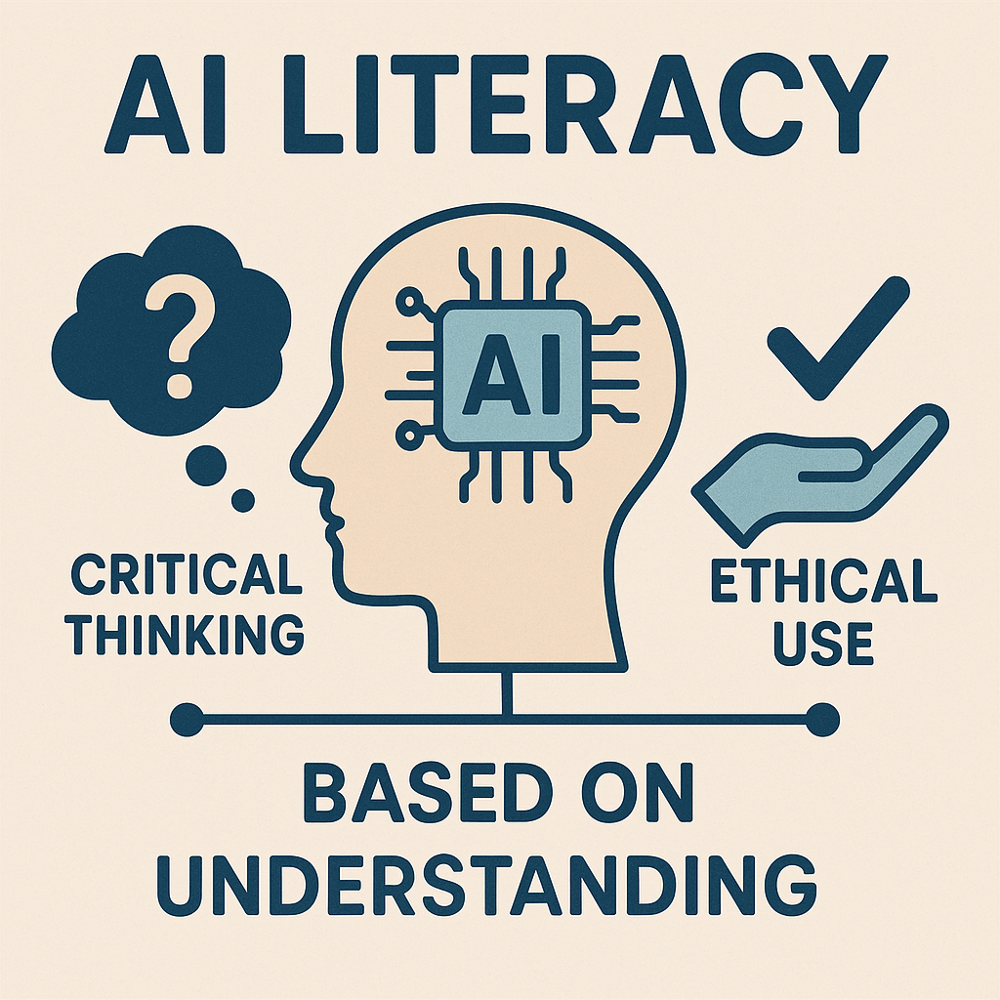

📊 AI 발전이 가져올 직업 세계의 변화
인공지능 기술의 급격한 발전은 우리의 일상뿐만 아니라 직업 세계에도 근본적인 변화를 가져오고 있습니다. 어떤 직업들이 AI의 영향을 크게 받을 것이며, 어떤 새로운 기회들이 생겨날까요?
1. 침체되거나 대체될 가능성이 높은 직업군
단순 반복 업무, 정형화된 데이터 처리, 예측 가능한 패턴 분석 등은 AI가 인간보다 훨씬 효율적으로 수행할 수 있는 영역입니다. 이에 따라 다음과 같은 직업군에서 인력 수요 감소나 역할 변화가 예상됩니다.
- **사무 및 행정 보조:** 단순 자료 입력, 문서 정리, 고객 응대(챗봇)
- **제조 및 생산:** 로봇 자동화로 인한 단순 조립, 검수 업무
- **운송 및 물류:** 자율주행 기술 발전으로 인한 운전직
- **데이터 입력 및 처리:** 대량 데이터의 자동 분류 및 분석
AI는 반복적이고 규칙적인 작업을 빠르게 학습하고 수행하여 효율성을 극대화합니다.
2. 새롭게 부상하거나 중요해질 직업군
반면, AI가 대체하기 어려운 인간 고유의 역량, 즉 창의성, 비판적 사고, 복합적 문제 해결 능력, 정서적 교감 등이 중요한 직업군은 더욱 각광받을 것입니다.
- **AI 개발 및 관리자:** AI 모델 설계, 학습, 유지보수 전문가
- **데이터 과학자:** AI 학습에 필요한 데이터를 정제하고 분석하는 전문가
- **크리에이터 및 디자이너:** AI 도구를 활용한 새로운 콘텐츠 창작
- **복합 문제 해결 전문가:** 여러 분야의 지식을 융합하여 문제 해결
- **정신 건강 전문가:** 인간의 정서적 교감과 공감 능력이 필수적인 직업
AI는 도구일 뿐, 이를 효과적으로 활용하고 새로운 가치를 창출하는 것은 인간의 역할입니다.